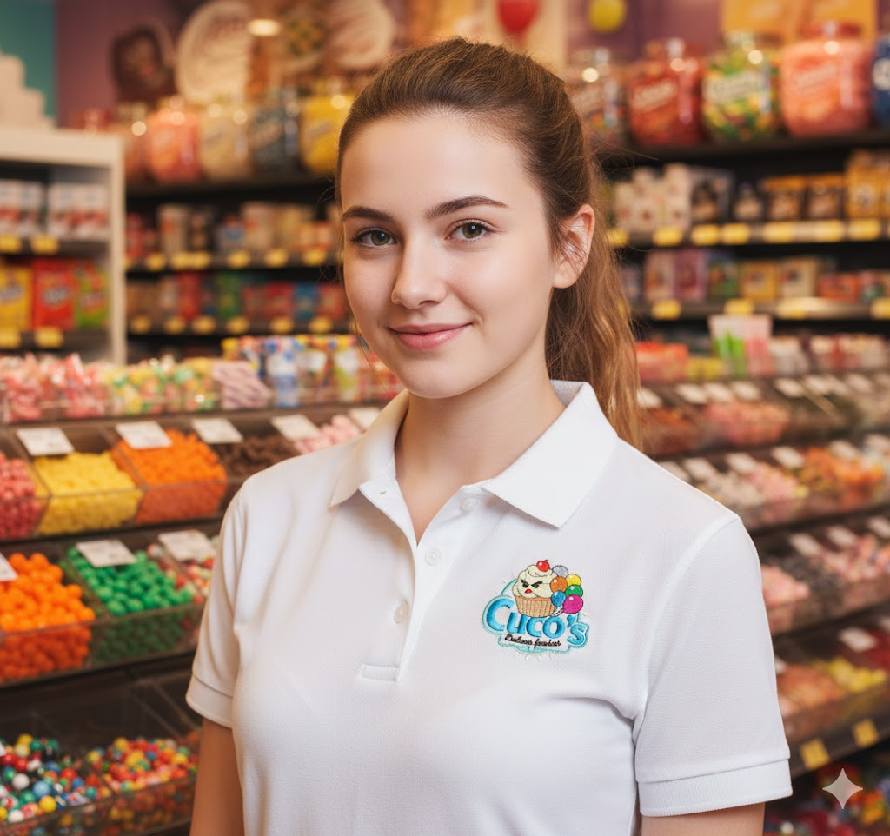
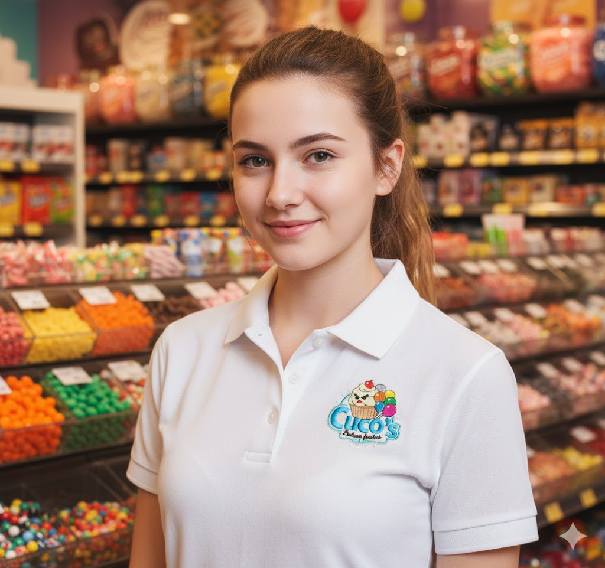
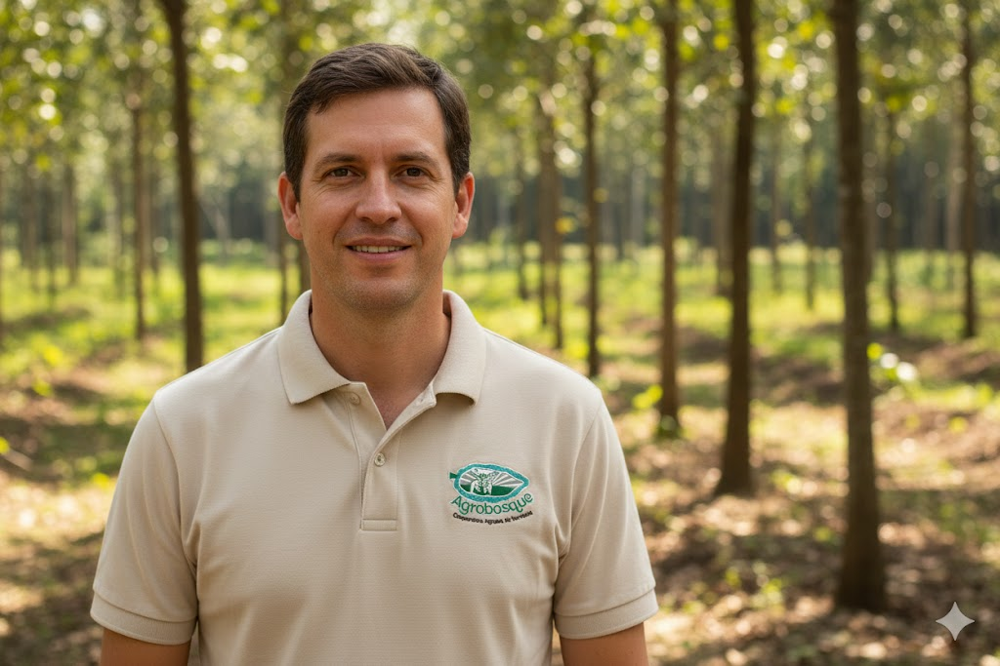
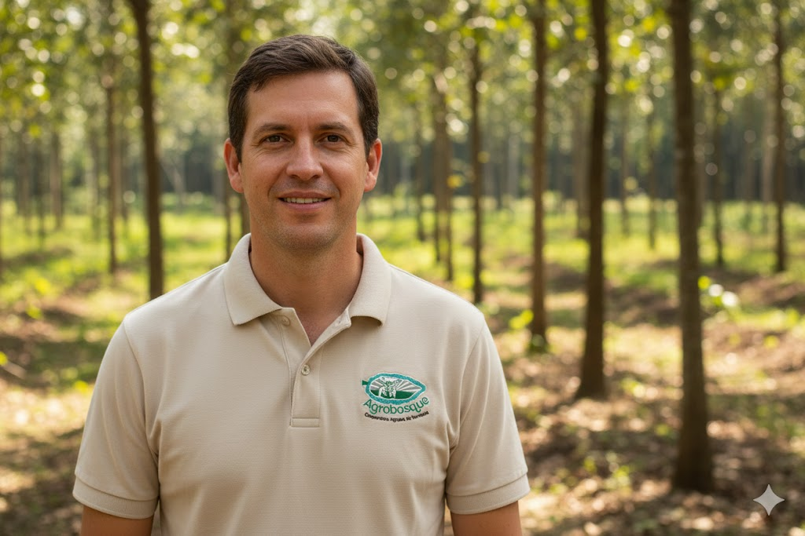
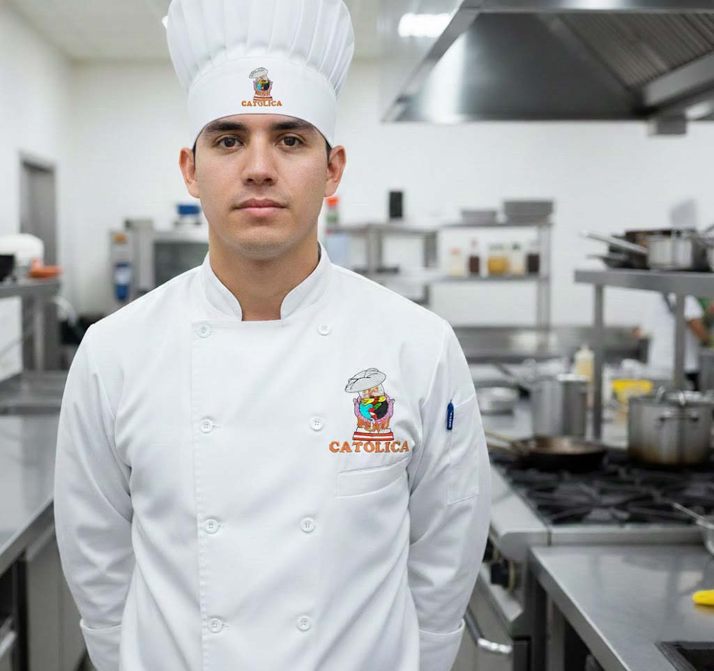
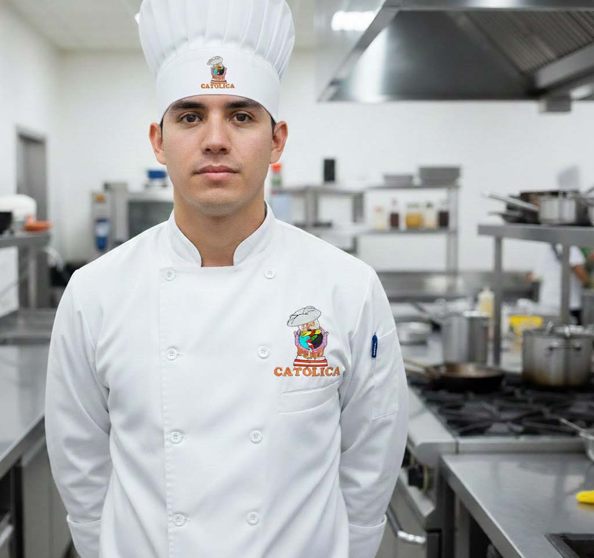
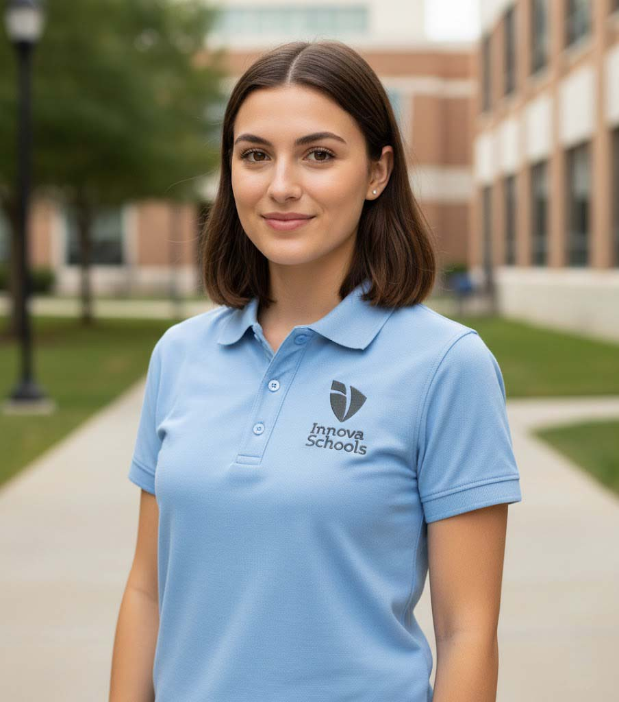
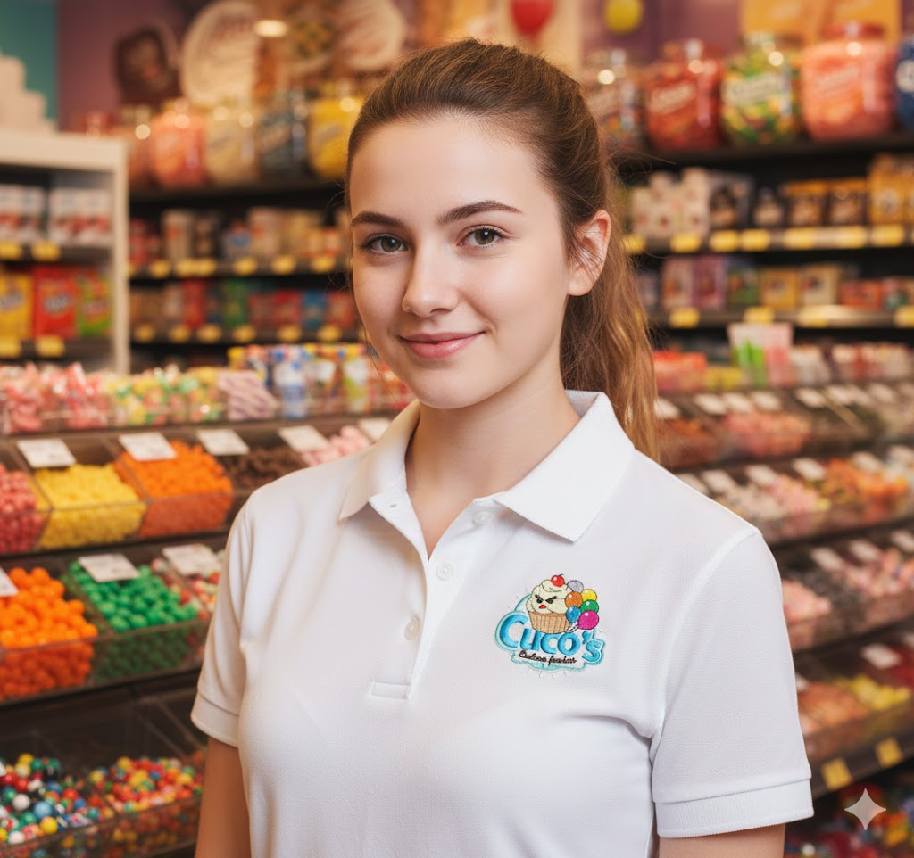
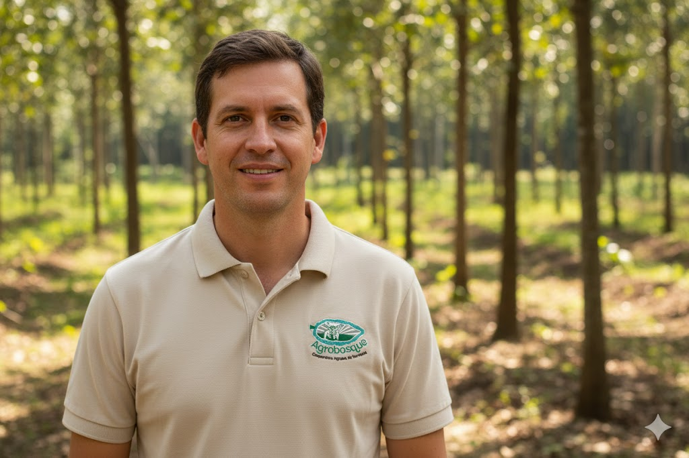
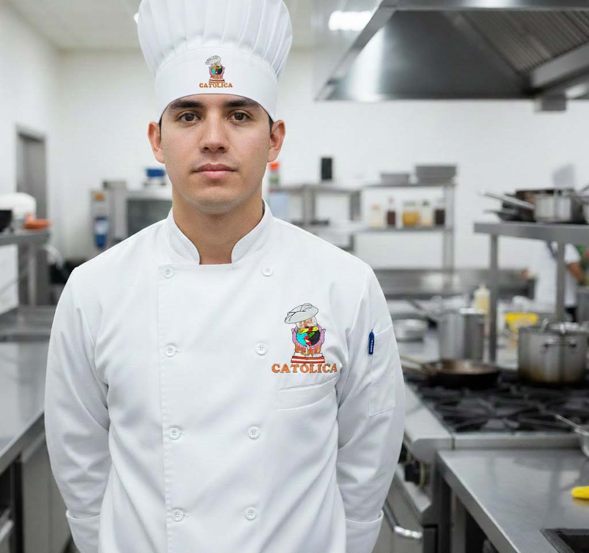

Nuestros Bordados
 

 

 


En Bordados Andres creamos bordados personalizados con calidad profesional, cuidando cada detalle desde el diseño hasta el acabado final. Además, contamos con una app propia que permite visualizar archivos DST directamente en el celular, para revisar los diseños antes de producirlos.



Hemos desarrollado una aplicación que permite visualizar archivos de bordado DST directamente en el celular, facilitando la revisión de puntadas, tamaño y detalles del diseño antes de la producción.

¿Tienes un diseño en mente? Escríbenos y lo hacemos realidad.
Cotizar por WhatsApp